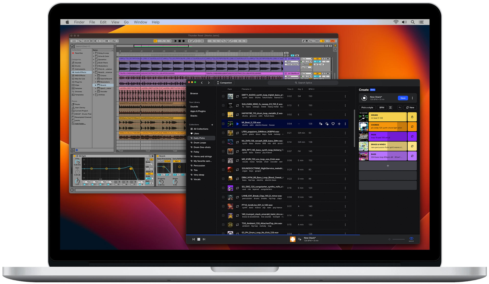

Windows 1
Aqui los datos para windows
Estructura Host
Prerequisitos
WSL
Logicamente, tener habilitado El subsistema Linux de Windows
Una GPU virtual

Para las aplicacions gráficas necesitaremos un servidor X, el cual a su vez necesita una GPU virtual. Esta GPU es dependiente del procesador por lo que hay que instalar la correspondiente a cada uno
Estructura
Scripts y utilidades
Por ultimo, obtendremos el conjunto de scripts y utilidades que nos ayudarán a hacer las tareas mas automáticas y repetibles.
Para ello, y asumiendo la estructura organizativa propuesta, nos posicionaremos en el directorio compartido: M:\shared y nos descargaremos estas utilidades de github:
- HTTPS:
https://github.com/Grandez/wsl_tools.git - SSL:
git@github.com:Grandez/wsl_tools.git - CLI:
gh repo clone Grandez/wsl_tools